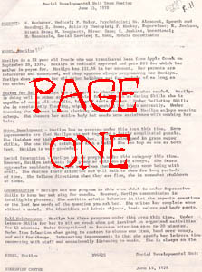
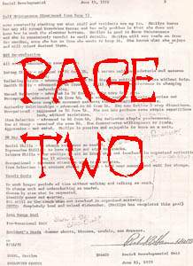
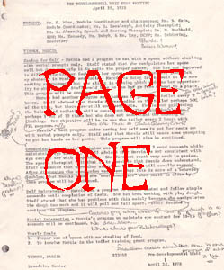
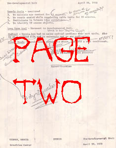

As I said, the Broadview Developmental Center was in extremely good shape for an abandoned building. Because of the police station and the fact that the area is used so much by rec center patrons, not a lot of people have had the chance to pillage the stuff left behind. In one of the rooms we came across stacks and stacks of old paperwork. Most of it was boring old requisition forms and payroll stuff, but after digging a little bit we came up with two patient reports. The information about the two Broadview residents they concern is fascinating stuff. Both were females who lived here in the late 1970s. I've blacked out their last names but everything else is as I found it; especially interesting are the critical little notes scribbled in the margins by a supervisor. To read the files, click on a page.

. . . . .


. . . . .

And from the wall in the kitchen comes the Residential Care Facility License from 1985, which gives you an idea of the last time the building was used by the state of Ohio.
Back